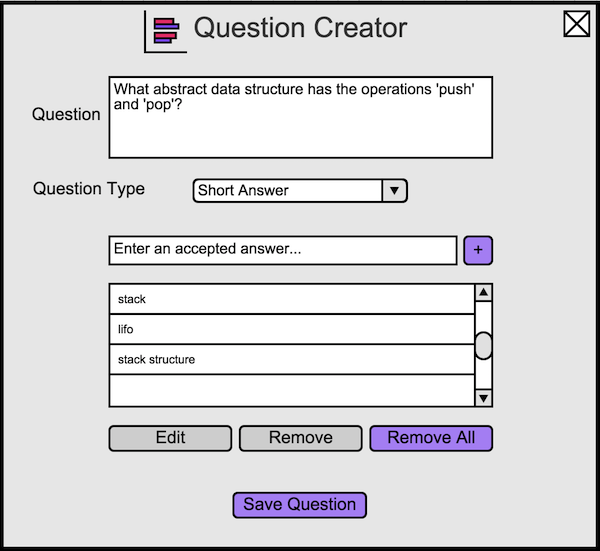
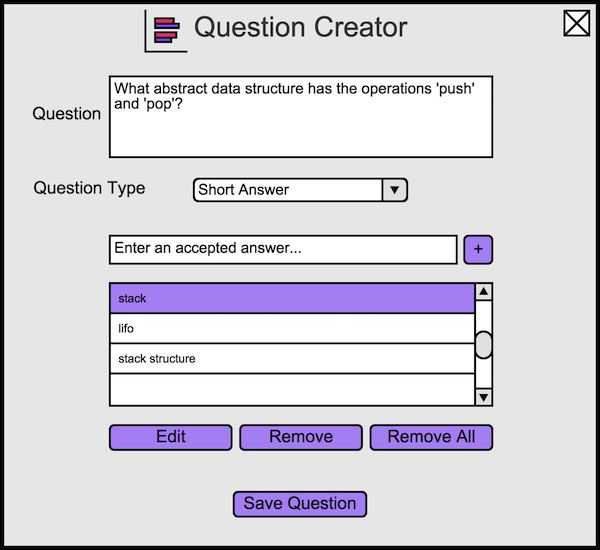

2.4.4. Creating a Short Answer Question
To create a short answer question, the user opens the question creator dialog, and then changes the question type to Short Answer.
The user will see Figure 8.

Figure 8: Default short answer view.
For a short answer type question, the user adds the answers that he wants to be considered correct. The user does this by entering
the answer in the 'Enter an accepted answer...' input box. The user selects the '+' icon to add it to the list
below the input box.
An example of a typical short answer question is shown in Figure 9.

Figure 9: A question about stacks.
If the user wants to remove all current answers to the question, he selects the 'Remove all' button.
When the user selects an item on the list of answers, that answer is highlighted and more options are available. This is shown in
Figure 10.

Figure 10: The user selects an answer.
The user selects 'Edit' when he wants to edit the existing answer. The user chooses 'Remove' when he wants to remove
the selected answer.
Prev: appt-scheduling
| Next: more-scheduling
| Up: functional
| Top: index